A Python plugin that automatically removes black/nodata borders from georeferenced rasters using footprint detection and edge-safe morphology better than the standard Nodata transparency workflows.
A QGIS plugin that automatically removes black / nodata borders from georeferenced rasters using footprint detection and edge-safe morphology better than standard NoData transparency workflows.
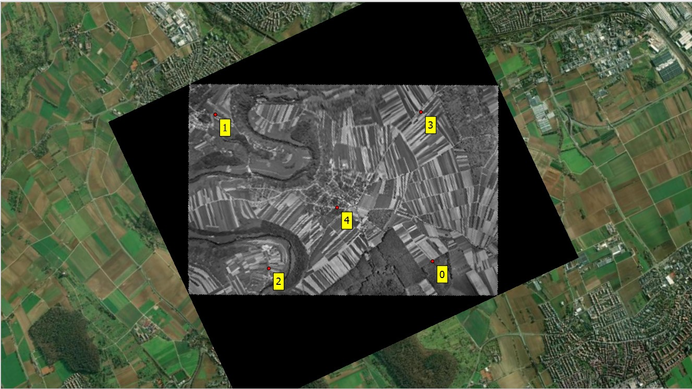
Before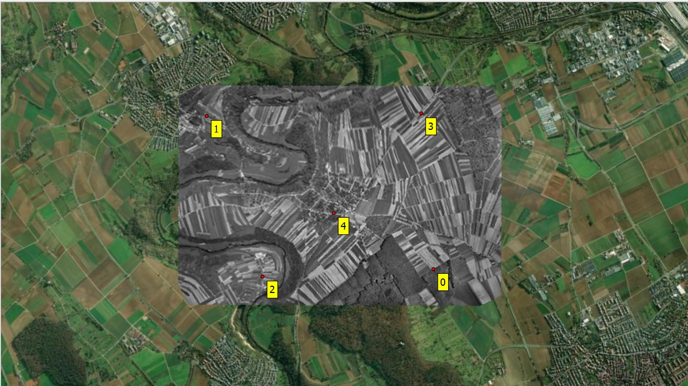
After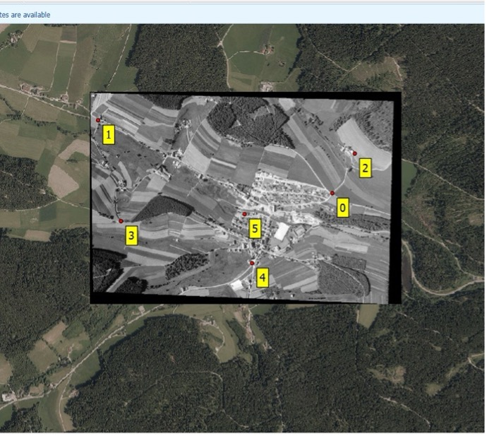
Before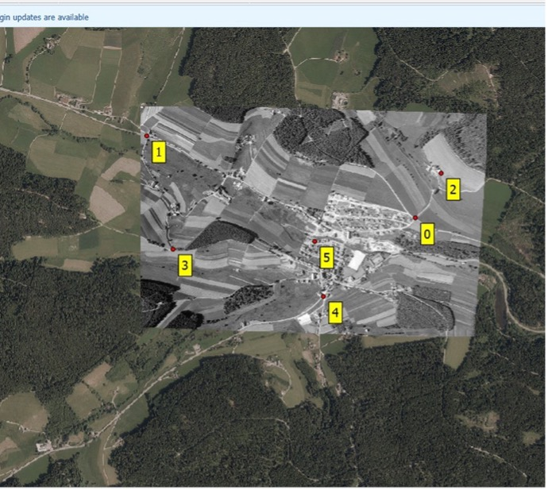
After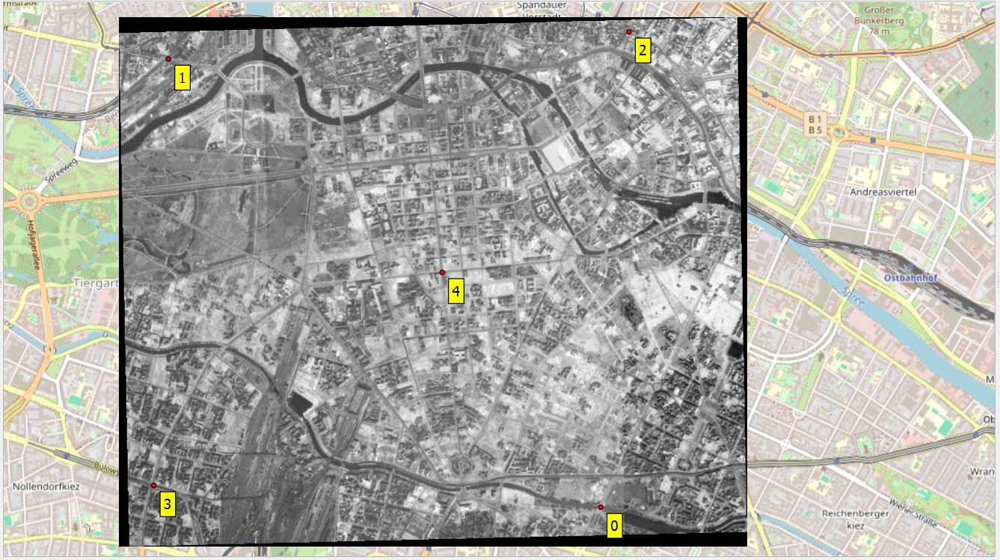
Before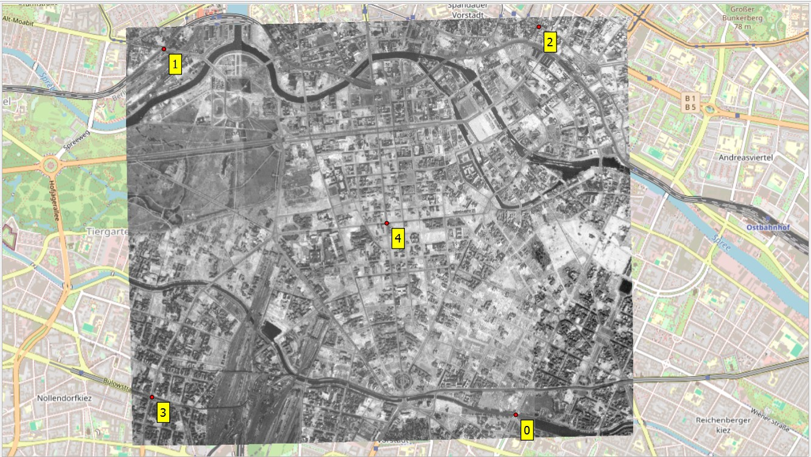
After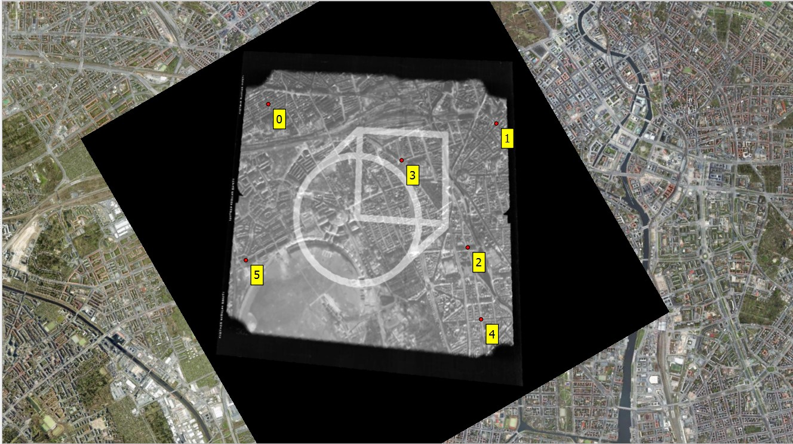
Before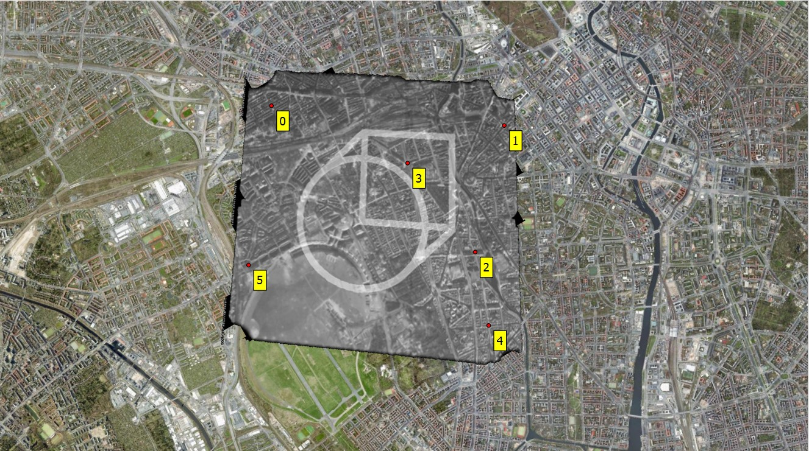
AfterAfter georeferencing scanned maps and historical aerial photos, the output raster often contains black frames / borders around the valid image footprint because areas outside the warped image are filled with a background value, usually 0.
Hides the basemap and all underlying layers, blocking visual QA and context checking during and after georeferencing.
Complicates mosaicking and map layout. Black frames cause seams and prevent clean blending between images.
Introduces internal holes when the standard NoData transparency workaround is applied, removing legitimate dark pixels inside the image.
Rather than blindly making all dark pixels transparent, the plugin identifies the actual content region, builds a polygon footprint, and clips away only the outer frame. This preserves every valid dark pixel inside the image.
| Criterion | Standard NoData = 0 | Black Frame Removal Plugin |
|---|---|---|
| Removes outer black border | ✓ Yes | ✓ Yes |
| Preserves dark interior pixels | ✗ No: creates holes | ✓ Fully preserved |
| Handles shadows & dark vegetation | ✗ Incorrectly removed | ✓ Safe via edge morphology |
| Footprint-based clipping | ✗ Pixel value only | ✓ True polygon footprint |
| Adjustable sensitivity | ✗ Fixed threshold | ✓ 0–100 user-controlled |
| Alpha band export | ~ Renderer-dependent | ✓ Fused into GeoTIFF output |
Separates likely image content from black background pixels using a configurable threshold (0–100).
Applies morphological closing to protect dark but valid pixels near image edges such as forests, shadows, water bodies.
Converts the refined binary mask into the true raster footprint polygon. No guesswork just geometry.
Clips the raster to that footprint, optionally adds an alpha band for transparency, and exports a clean GeoTIFF auto-loaded into QGIS.
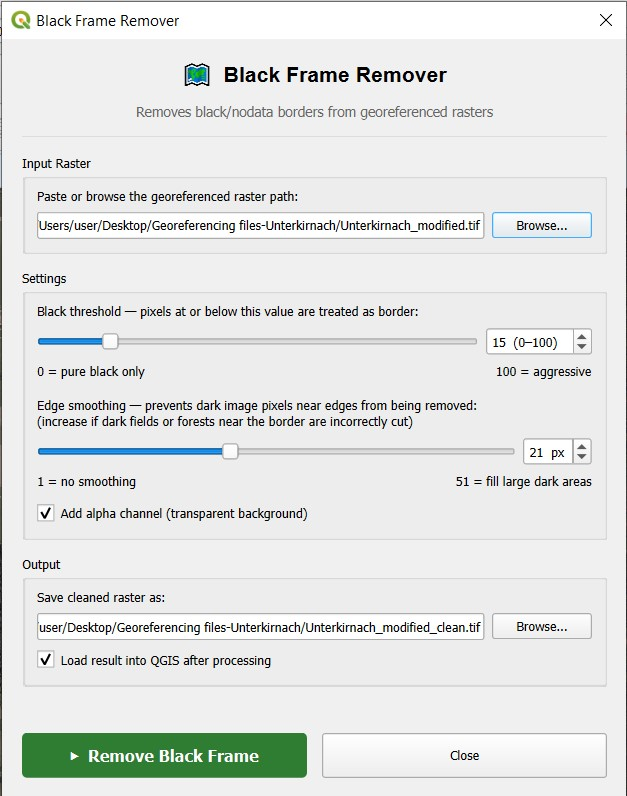
Paste or browse the path to any georeferenced raster. Supports all GDAL-readable formats including GeoTIFF.
Black threshold (0–100) controls how aggressively border pixels are identified. 0 = pure black only; 100 = aggressive sweep.
Edge smoothing (1–51 px) morphological buffer that prevents dark valid pixels near the edge from accidental removal.
Optional alpha band for clean transparency + auto-load back into the active QGIS canvas immediately after processing.
Fine-tune border detection sensitivity from 0 (pure black only) to 100 (aggressive). Adapts to variable scan quality and film artifacts without over-removing content.
Morphological closing prevents dark but valid pixels (such as forests, shadows, water), near the image boundary from being incorrectly classified as border and removed.
Builds a true geometric footprint from the refined mask. The clip is driven by actual image extent making it robust for tilted, cropped, or irregularly shaped rasters.
Exports a clean GeoTIFF with optional embedded alpha channel and immediately reloads the result into the active QGIS project. No manual file management needed.
Designed for anyone working with historical or scanned geospatial imagery where clean raster overlays are essential.
After georeferencing mid-20th century aerial surveys, remove black frames cleanly without destroying dark agricultural fields, forest shadows, or water features.
Prepare scanned topographic or cadastral maps with transparent borders, ready for feature digitization and overlay against modern reference data.
Create seamless historical baselayers for land-use change detection, environmental monitoring, and urban planning comparison workflows.
Produce publication-ready raster tiles for print layouts, atlases, and geospatial reports.
As a supporting productivity tool, I also developed a Basemap Loader Plugin for QGIS.
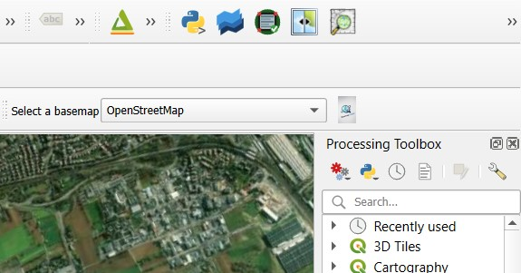
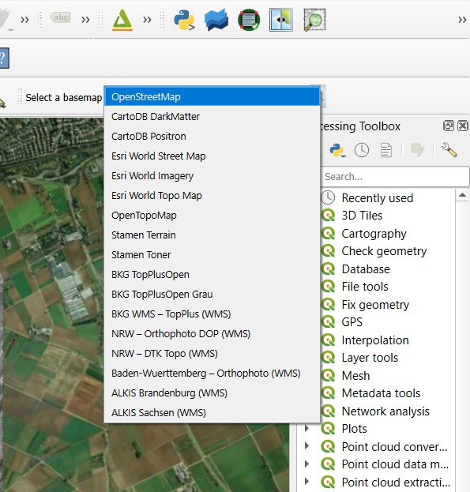
A dropdown-based QGIS toolbar plugin for instant basemap switching. Built to complement the Black Frame Remover by letting you quickly compare cleaned rasters against reference imagery without leaving the QGIS interface.
Developed entirely within the QGIS Python ecosystem, requiring no external dependencies outside the default QGIS environment.